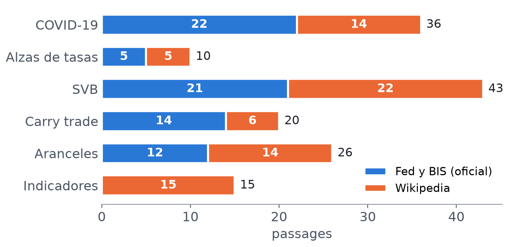
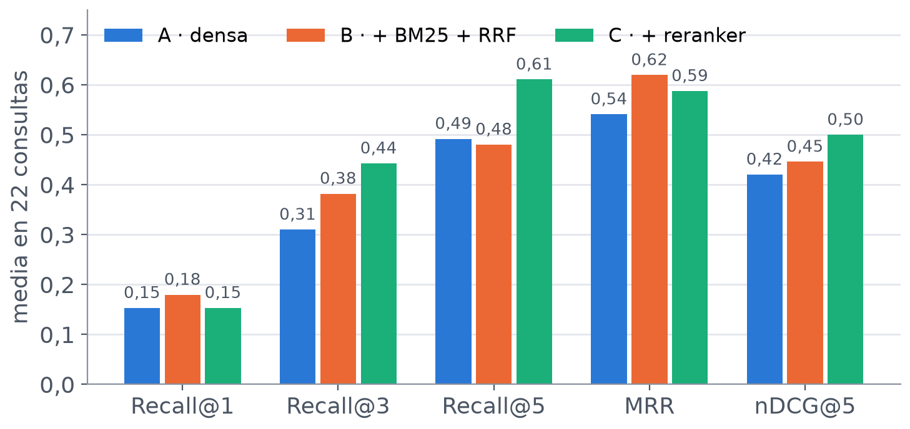
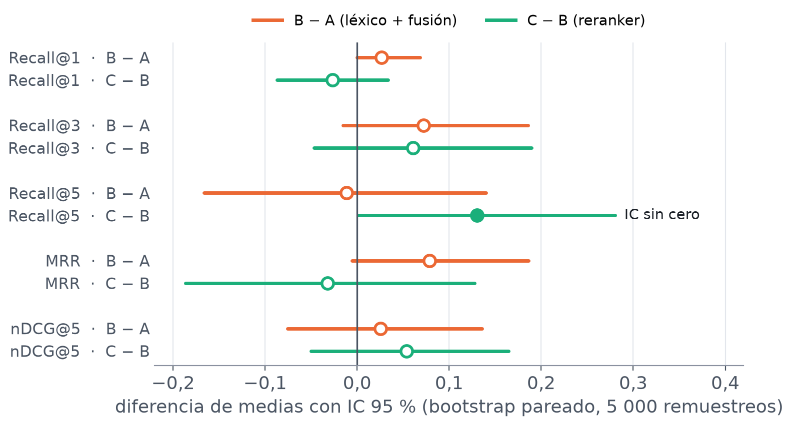
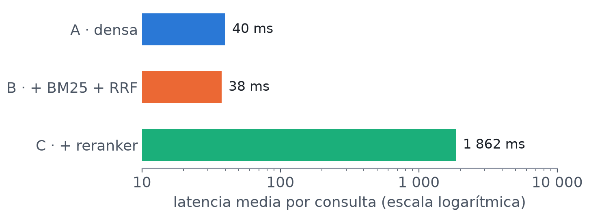
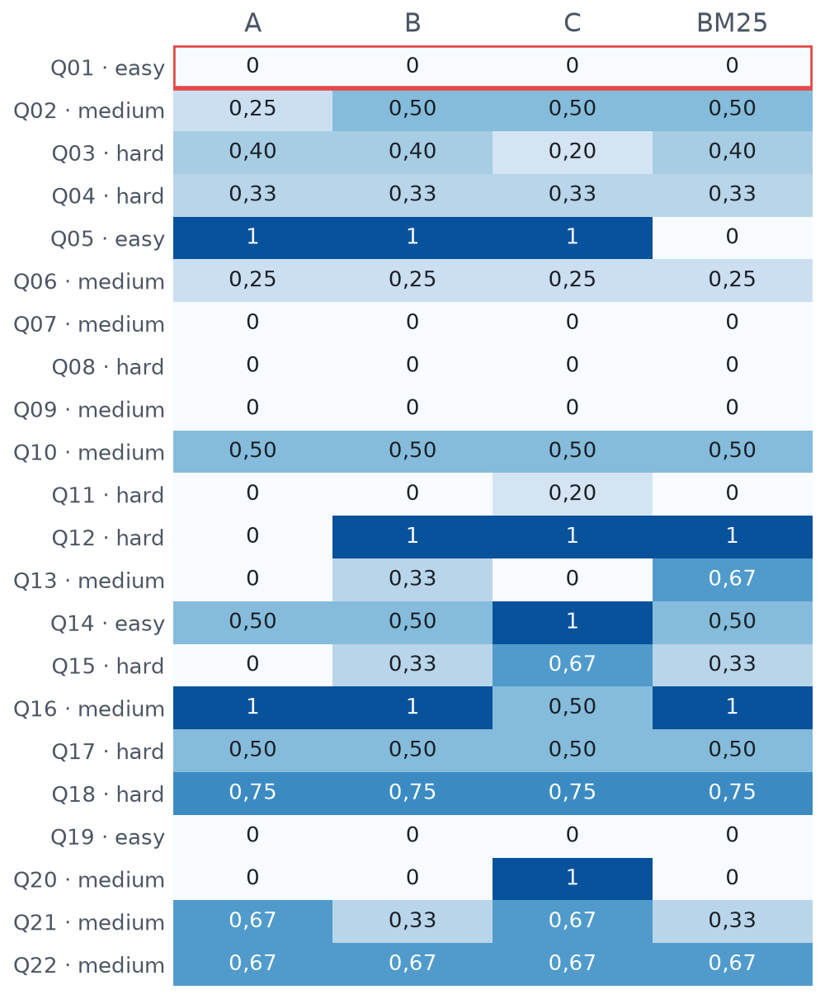
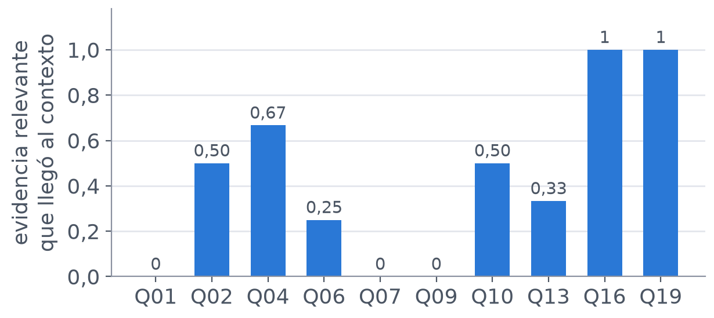
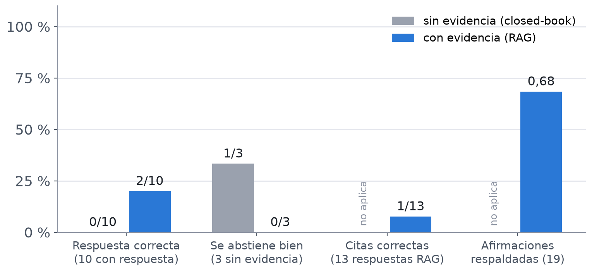
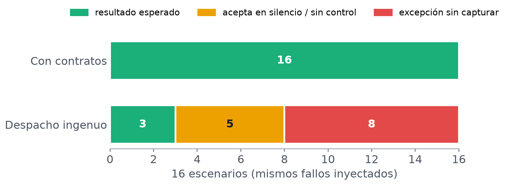

Riesgo de mercado con evidencia: tres recuperadores comparados, respuestas con citas auditadas y una herramienta con contratos.
La pregunta es la misma desde la PC1. Lo que cambia es cuánto se puede medir de la respuesta.
Sin agentes: esta es la base sobre la que se construirán en la Semana 9.

21 documentos en inglés: comunicados e informes de la Fed, dos publicaciones del BIS y artículos de Wikipedia con la versión fijada.
22 consultas y 57 pares consulta–passage relevante (los qrels), anotados antes de correr cualquier sistema.
3 consultas más sin respuesta en el corpus, para probar si el sistema sabe abstenerse.
| semana | concepto | evidencia en el cuaderno |
|---|---|---|
| 1 | tokens, Q/K/V, máscara causal | cambiar el último token deja los logits previos iguales (diferencia 0,0) |
| 2 | logits, softmax, greedy, KV cache | greedy elige el argmax (prob. 0,62); el KV cache acelera ×3,8 |
| 3 | JSON Schema: válido no es adecuado | 25/25 consultas válidas, pero 20/25 copian la original |
| 4 | chunking, FAISS, top-k, qrels | 102 chunks; sistema A como línea base |
| 5 | BM25, fusión RRF, Cross-Encoder | comparación A, B y C con bootstrap |
| 6 | contratos, reintentos, timeouts | 16/16 escenarios correctos; 8/8 casos de la PC1 |
| 7 | Recall, MRR, nDCG, grounding | auditoría de respuestas, citas y afirmaciones |
La matriz completa (recurso del curso, celda, evidencia y limitación) está en el README.
Recall@k: qué parte de la evidencia relevante aparece entre los k primeros.
MRR: qué tan arriba sale el primer passage relevante.
nDCG@5: calidad del orden en los 5 primeros.
Corpus, consultas, qrels, chunks de 180 palabras, 10 candidatos y semilla 42.
De A a B cambian dos cosas a la vez; de B a C solo una, el reranker.

Recall@3 pasa de 0,310 a 0,382 y a 0,442.
El reranker sube Recall@5, pero baja el MRR respecto de B.
BM25 solo llega a 0,352 en Recall@3, más que la densa sola.


Solo un intervalo deja fuera el cero: Recall@5 de C sobre B (+0,130; de 0,002 a 0,280).
Y el reranker cuesta unas 46 veces más por consulta.

Pregunta por el «VIX». La evidencia dice «CBOE Volatility Index» y nunca usa esa sigla, así que BM25 no la encuentra; otros documentos que sí dicen «VIX» la desplazan.
El reranker no ayuda: solo reordena candidatos, y esta evidencia nunca fue candidata.
Q05: «cuánto cayó desde su máximo» no comparte palabras con «drawdown». BM25 falla y la densa acierta.
Q12 y Q13: siglas y términos exactos como «EGRRCPA». La densa falla y BM25 acierta.
Q20: solo C la resuelve, porque sube el chunk correcto al primer lugar.
Qwen de 0,5B, decodificación greedy y 13 preguntas fijas: 10 con respuesta en el corpus y 3 sin ella.
Sin evidencia: responde de memoria. Con evidencia: recibe los 3 mejores chunks del sistema C y debe citar los passages.
Se audita a mano, por separado: si la respuesta es correcta, si la cita es correcta y si cada afirmación está respaldada.

Antes de mirar al modelo: la evidencia completa llegó al contexto solo en Q16 y Q19. En Q01, Q07 y Q09 no llegó nada.

Correctas: 0/10 sin evidencia y 2/10 con evidencia.
Citas correctas: solo 1 de 13.
El 68 % de lo que afirma está en el contexto, pero muchas veces copia un texto que no responde la pregunta.
El contexto no traía el passage correcto. Quien votó en contra fue Loretta Mester (D10-P05).
La cifra es correcta, pero está en D05-P13. Que haya cita no significa que sea la correcta.
No había respuesta en el corpus. Copió un passage de 2020 y cambió el año a 2008.
Sin evidencia, el mismo modelo dijo «I don't know» en 5 de las 10 preguntas con respuesta e inventó que el VIX llegó a «≈150» en 2008.
Con la misma evidencia, el anexo con DeepSeek sí se abstiene en las 3 sin respuesta: el cuello de botella de Qwen está en la generación.
risk.compute_signal(ticker, fecha) calcula los indicadores y la severidad con la regla de la PC1.

Reproduce los 8 de 8 casos de la PC1 y pasan las 28 pruebas.
Un error de formato o de dominio no se reintenta: repetir da el mismo error.
BM25 y la búsqueda densa se complementan; ningún sistema domina en 22 consultas.
Dar evidencia a un modelo de 0,5B no lo vuelve fiel: acierta más, pero cita mal y no se abstiene.
El cálculo de indicadores debe hacerse en código con contratos, no en el LLM.
22 consultas, un solo anotador, 4 chunks truncados y un solo modelo generador.
La comparación por chunk se añadió después de ver los resultados.
No puedo afirmar que C sea mejor que B ni que el reranker justifique su costo.
Siguiente paso (Semana 9): workflows y agentes sobre esta base reproducible.